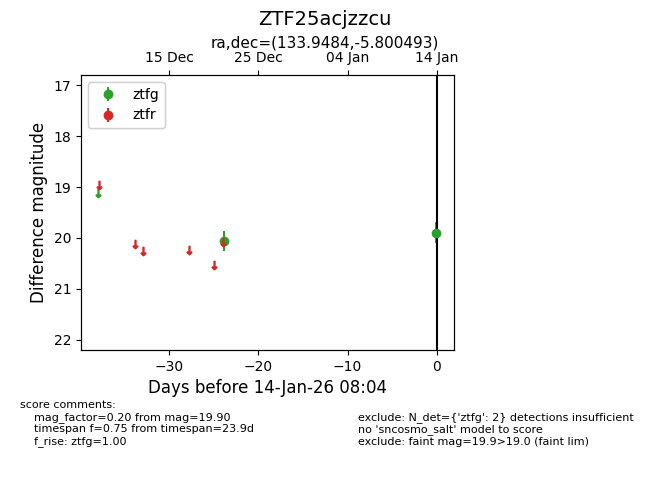
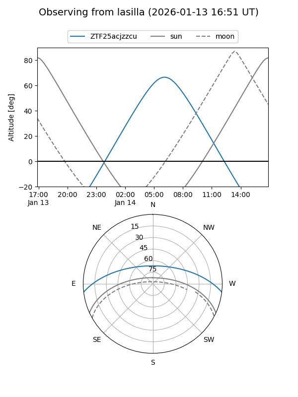
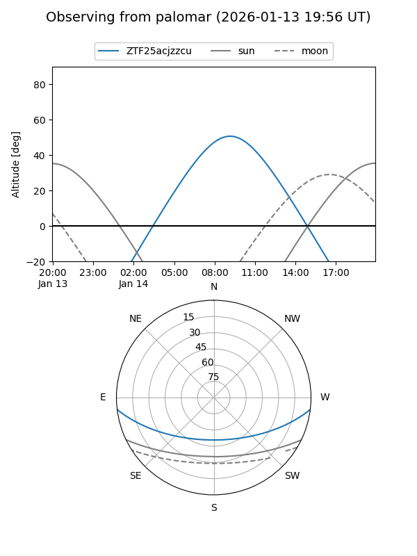
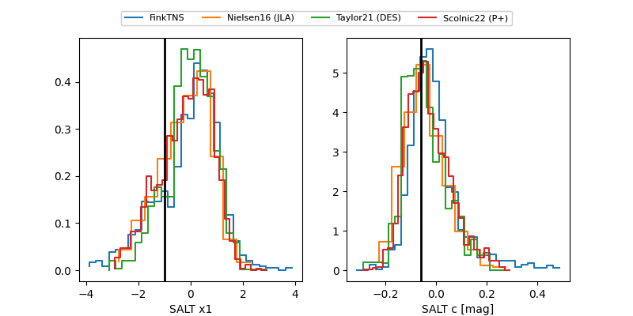

ZTF25acjzzcu
Target ZTF25acjzzcu at 2026-01-14 08:05
Aliases and brokers:
FINK: link
Lasair: link
ALeRCE: link
alt names
ZTF25acjzzcu (ztf,fink_ztf)
Coordinates:
equatorial (ra, dec) = 133.9484,-5.80049
equatorial (HMS+DMS) = 08:55:47.62,-05:48:01.77
galactic (l, b) = (233.7648,+24.27549)
Flags:
Photometry:
last ztfg=19.90
2 ztfg detections
Lightcurve

Visibility


Additional plots
